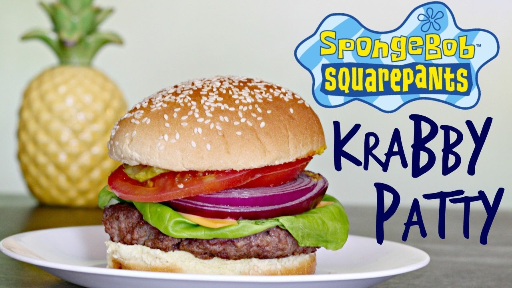

Krabby Patty

Description
This borger will take you back to the early days!
Ingredients
Patty
- 1 tbsp vegetable oil, plus extra for frying
- small onion, finely chopped
- 1 tsp dried thyme
- 1 pound imitation crab meat or ground beef, thawed and finely chopped
- 3/4 cuo breadcrumbs
- 1/2 tsp fine salt
- 2 tsp mustard
- 2 tbsp mayonnaise
- 1 large egg, beaten
Borger
- 2 sesame seed coated burger buns
- Lettuce
- American cheese slices
- Onion slices
- Tomato slices
- Ketchup
- Mustard
- Mayonnaise
- Pickles, sliced
Steps
Patty
- First, preheat the oven to 360ºF (180ºC).
- Heat the oil in a frying pan over medium heat. Add the chopped onions and allow them to saute for 2-3 minutes (or until they become translucent).
- Then, add the dried thyme, give the mixture a good stir, and allow it to cool completely.
- Once the onions have cooled, mix together all of the patty ingredients in a large bowl. You can use your hand if needed, but wear gloves. Otherwise, use a food processor or a wooden spoon.
- Once the patty mixture is made, divide it into two large patties. Then, shape them into flat discs. You can make them large and flat or small and thick.
- To fry the patties, heat some more oil in a medium-high frying pan. Add the patties and allow them to cook for roughly 2-3 minutes per side.
- Once they are all fried, place them in a roasting tray and bake them for another 10 minutes.
Borger
- To start, place your cooked Krabby Patty onto the bottom sesame seed bun.
- Then, add the freshly washed and dried lettuce leaves. You can follow with some slices of American cheese, sliced onions, and tomatoes.
- Next, you can add as much sauce as you'd like. This is all to your liking.
- And finally, add your pickle and add the top bun to the burger.